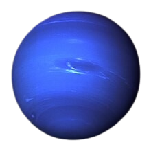
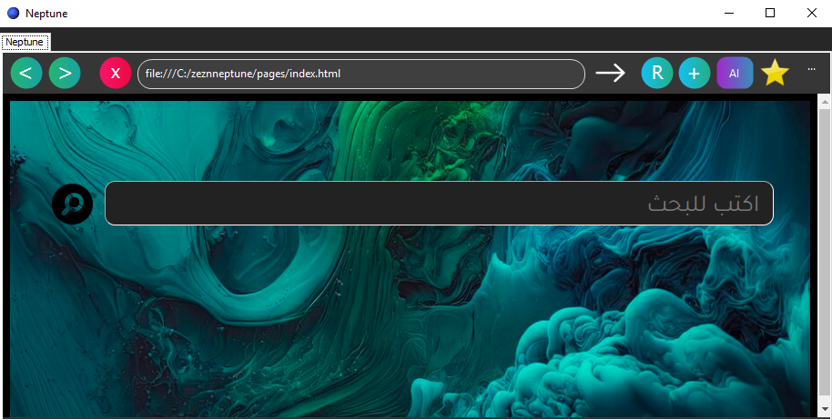

Neptune 
متصفح نيبتون ، هو اول متصفح سوري ، يقدم خصوصية عالية ومميزات عديدة
متصفح امن يعمل بتقنية كرومانيوم التي يعتمد عليها كبرى المتصفحات الاخرى مثل كروم وايدج واوبيرا
امكانية استخدام اليوتيوب بدون اعلانات
تحميل الملفات بسرعة كبيرة
ذكاء اصطناعي يعمل على نموذج Syria Ai
امكانية انشاء وقراءة رموز الاستجابة السريعة QR-Code
سرعة اعلى واستهلاك اقل للموارد
امكانية حظر المواقع الغير مرغوب بها
يوجد محفظة كلمات مرور مشفرة

Get From Uptodown
Get From MediaFire